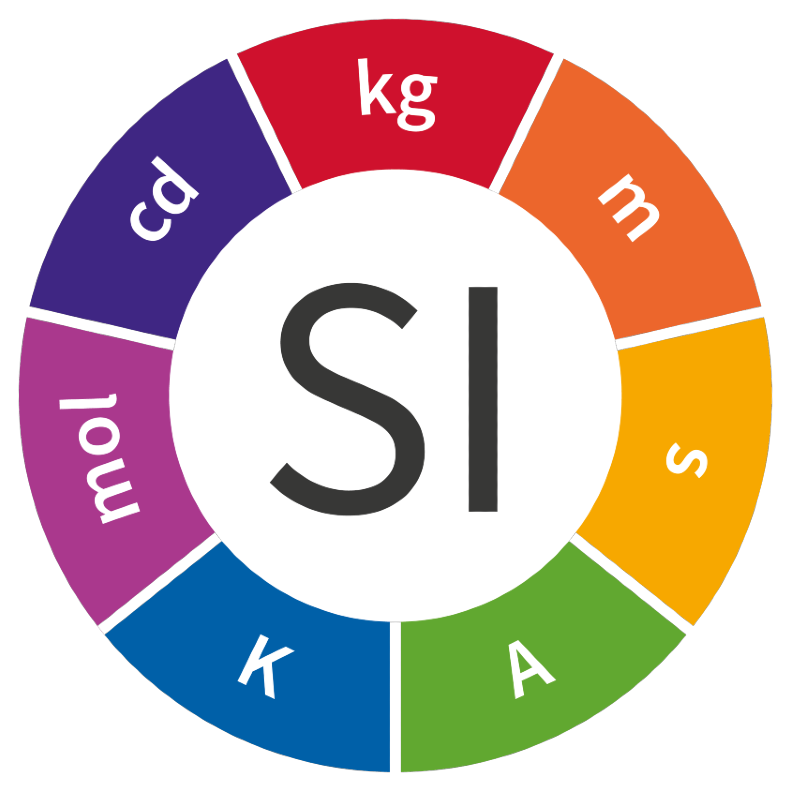

| Medida | Unidad |
| la masa | kilogramo (kg). |
| la longitud | metro (m) |
| el tiempo | segundo (s) |
| la temperatura | kelvin (K) |
| la intensidad luminosa | candela (cd) |
| la cantidad de sustancia | el mol |
| la intensidad de corriente | amperio (A) |
Derivadas;
Son aquellas magnitudes que están conformadas por una proporción o relación (o ambos casos) entre dos o más magnitudes simples. Algunas de ellas poseen su propio nombre (e.g. Newton, voltio...), pero muchas otras se indican simplemente mediante la interacción de sus magnitudes proporcionales. Existen muchas magnitudes simples, de las cuales explicaré las más utilizadas a nivel académico| Medida | Unidad |
| Velocidad (m/s): | Indica la relación existente entre la distancia recorrida en un tiempo determinado. Algunos profesores admiten el uso de km/h para la realización de determinados tipos de ejercicios. |
| Aceleración (m/s²): | Indica el crecimiento/decrecimiento de la velocidad de un cuerpo en un tiempo determinado. |
| Fuerza: | Indica el intercambio de momento lineal entre dos sistemas. Su unidad recibe el nombre de Newton (N), en honor al físico Isaac Newton |
| Energía: | indica la capacidad de un sistema para generar un trabajo (movimiento de partículas). Su unidad recibe el nombre de Julio o Joule (J) |
| Potencia: | Mide la relación entre la capacidad de un sistema para realizar un trabajo en un tiempo determinado. Su unidad recibe el nombre de vatio o watt (W), en honor al científico escocés James Watt |
| Presión: | Mide la fuerza que genera un cuerpo en relación a su superficie. Su unidad es el Pascal. También es común que se utilicen otras unidades no pertenecientes al Sistema Internacional, como la atmósfera (atm) o el milímetro de mercurio (mmHg). |
| Tensión eléctrica: | Establece la relación entre la potencia de un sistema y la intensidad de corriente eléctrica necesaria para su ejecución. Su unidad es el voltio (V), en honor al científico italiano Alessandro Volta. |
| Densidad (kg/m³): | Es la relación entre la masa de un cuerpo y su volumen. |
Escalares y Vectoriales;
Es aquella que queda completamente determinada con un número y sus correspondientes unidades, y una magnitud vectorial es aquella que, además de un valor numérico y sus unidades (módulo) debemos especificar su dirección y sentido.La elección de un escalar o un vector para representar una magnitud física depende de la naturaleza de la misma; si estamos describiendo la temperatura de una habitación, la densidad de un cuerpo, su masa... necesitaremos representarlas mediante un número. Por el contrario, cuando trabajemos con magnitudes como la fuerza, la velocidad, la aceleración, el campo eléctrico, etc., emplearemos vectores.
Sube
Sistema de unidades
Las siete unidades básicas del SI, establecidas por convenio, se consideran dimensionalmente independientes entre sí y son: metro, kilogramo, segundo, amperio, kelvin, mol y candela.Las unidades derivadas se forman a partir de lo que conocemos como unidades básicas, como productos de las potencias de estas. Algunas unidades derivadas reciben nombres especiales, con objeto de expresar, en forma compactacia, combinaciones frecuentemente que son utilizadas de unidades básicas. Así ocurre, por ejemplo, con el julio, símbolo J, por definición igual a kg m2 s-2.

Multiplos y submultiplos del sistema de unidades
Los múltiplos son las unidades de medida más grandes que el metro. Son el decámetro, el hectómetro y el kilómetro. Hay más pero de momento solo vamos a ver estas. Los submúltiplos son las unidades de medida más pequeñas que el metro.Convertir unidades;
Para convertir unidades requieres de 4 Pasos El primero es escribir la unidad,el segundo es la selecion de las equilaencias a decuadas,el tercero es formar el valor de convercion para asi multiplicarlo por la cantidad originalUn ejemplo es:
4. Si convertimos 30 oz a gramos, tenemos:
| 30 oz | ---> | Gramos |
| Magnitud | = | Peso |
| Equivalencias | = | 1 oz= 28.35g |
| 30 oz | 28.35 g | 30 oz |
| 1 oz |
=850.5 g
Equivalencias;
Para poder hacer esto nesecitaras la ayuda de una tabla de equivalencias la vual te dejo aqui abajo
Sube